UML 分类、符号与图例速查¶
用途：按图种、符号、英文／法文名称检索；需要推导与完整案例时跳转教材。标准分类参考 OMG UML 2.5.1，课程分类保留 cours2 p14–19 的表述。图形旁文字是语义依据，颜色不具有 UML 标准含义。
1. 完整分类与选图¶
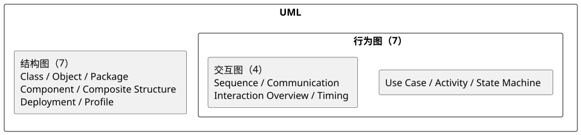
图 A：结构图 7 种，行为图 7 种；其中交互图 4 种包含在行为图内。
| 标准分类 | 中文 / English / Français | 问题与典型场景 | 关键符号 | 教材入口 |
|---|---|---|---|---|
| 结构 | 类 / Class / Classes | 类型、成员、关系；领域与软件接口设计 | 三区矩形、关联、菱形、三角 | 类图、关系 |
| 结构 | 对象 / Object / Objets | 一个有效实例快照；检查类图数量 | 下划线实例头、值槽、链接 | 对象图 |
| 结构 | 包 / Package / Paquetages | 逻辑命名空间与跨包依赖 | 文件夹、嵌套、import/merge | 架构图 |
| 结构 | 组件 / Component / Composants | 可替换单元、服务契约 | 组件标记、接口球／插口、端口 | 组件 |
| 结构 | 复合结构 / Composite Structure / Structure composite | 某分类器内部部件怎样连接 | 部件角色、边界端口、连接器 | 内部结构 |
| 结构 | 部署 / Deployment / Déploiement | 软件在哪些机器或执行环境运行 | 三维节点、制品、通信路径 | 部署 |
| 结构 | 轮廓 / Profile / Profils | 定义领域专用 UML 扩展 | profile、stereotype、元类、extension | 轮廓 |
| 行为 | 用例 / Use Case / Cas d'utilisation | 边界外角色获得哪些服务 | 人形、椭圆、系统边界、include/extend | 用例 |
| 行为 | 活动 / Activity / Activités | 控制／数据怎样经过步骤、条件和并行 | 动作、令牌流、决策、fork/join | 活动 |
| 行为 | 状态机 / State Machine / États-transitions | 一个对象怎样响应事件改变状态 | 状态、转换、守卫、复合状态 | 状态 |
| 交互（行为子类） | 时序 / Sequence / Séquence | 一次场景的消息先后 | 生命线、执行规格、消息、片段 | 时序 |
| 交互（行为子类） | 通信 / Communication / Communication | 谁与谁交换有序消息 | 实例链接、箭头、消息编号 | 通信 |
| 交互（行为子类） | 交互概览 / Interaction Overview / Vue globale d'interaction | 多个交互之间的流程 | ref 框、决策、活动控制符号 | 交互概览 |
| 交互（行为子类） | 时间 / Timing / Temps | 状态／值随时间的变化及期限 | 时间轴、状态线、时间／时长约束 | 时间 |
课件分类对照。静态 5 图：用例、类、对象、组件、部署；动态 4 图：时序、协作、状态转换、活动；包图在“其他图”专页。标准中用例属于行为，协作图的现代名称为通信图，包图属于结构。课程列了活动图但未专页展开，教材活动细节及四个额外图种是明确补充。
4+1 视图与图种不是同一分类：用例视图给场景；逻辑视图给类和协作；进程视图给并发与同步；实现视图给包、库、组件；部署视图给机器与网络。解释。
2. 类与成员表示¶
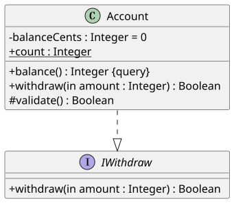
图 B：类名、属性、操作分区；省略某区只是隐藏细节。
属性：可见性 名称 : 类型 [多重性] = 默认值 {性质}
操作：可见性 名称(in/out/inout 参数 : 类型 = 默认值) : 返回类型 {性质}
实例：对象名:类名 ← 头部加下划线
值槽：属性名 = 值
| 表示 | 含义 | 例子 / C++ 对应 |
|---|---|---|
+ public / public |
公开 | + withdraw(amount : Money) : Boolean |
- private / privé |
私有 | - balance : Money |
# protected / protégé |
受保护 | 派生类可访问 |
~ package / paquetage |
包级可见（补充） | C++ 无直接访问级别对应 |
| 成员下划线 | 静态成员 | static count；勿与实例头下划线混淆 |
斜体、{abstract} |
抽象类／操作 | 纯虚函数 = 0；override 是代码层检查 |
«interface» |
接口分类器 | 契约；C++ 常用纯虚基类 |
/total |
派生属性 | 可通过其他属性计算 |
{readOnly} |
只读 | 不代表一定存为 const 字段 |
{query} |
不改变模型状态的查询 | const 常对应，但不是充分证明 |
{id} |
标识属性 | 不表示 C++ 指针地址 |
«enumeration» |
枚举类型 | Active / Frozen / Closed |
模板签名 T |
未绑定类型参数 | template<class T> |
«bind» <T -> X> |
绑定类型参数 | List<GraphicObject>；不是创建实例 |
«entity»、«thread» 等 |
构造型／领域约定 | 首先明确所属轮廓，不任意宣称为标准 |
{条件} |
约束 | {quantity >= 1} |
| 折角便笺 | 注释 | 可用虚线连接被说明元素 |
成员方向：in 输入，out 输出，inout 输入并修改。默认参数 drive(to : String = "Brest") 不规定具体函数体。成员完整解释。
3. 线条与箭头：类图关系表¶
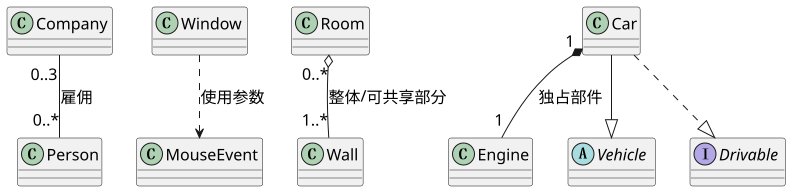
图 C：先看线型，再看端点；菱形所在端是整体，三角指向一般类型／接口。
| 关系（中 / 英 / 法） | 标准表示 | 从 A 到 B 的读法 | PlantUML | 所有权／C++ 提示 |
|---|---|---|---|---|
| 关联 / Association / Association | 实线，可无箭头 | A 的对象与 B 有业务链接 | A -- B |
不预设谁销毁谁 |
| 导航关联 / Navigable Association / Association navigable | 实线开放箭头 A→B | 从 A 能访问 B | A --> B |
引用、指针或 ID 等；非拥有也可导航 |
| 依赖 / Dependency / Dépendance | 虚线开放箭头 A→B | A 使用 B，可能受 B 变化影响 | A ..> B |
参数、局部使用、调用 |
| 共享聚合 / Shared Aggregation / Agrégation | 实线，A 端空心菱形 | A 是整体，B 是可独立／共享部件 | A o-- B |
生命周期必须另说明 |
| 组合 / Composition / Composition | 实线，A 端实心菱形 | A 负责其独占部件 B | A *-- B |
值成员或 unique_ptr 常见；不规定复制 |
| 泛化 / Generalization / Généralisation | 实线空心三角 A→B | A 是 B 的一种 | A --|> B |
public 继承需满足替换契约 |
| 实现 / Realization / Réalisation | 虚线空心三角 A→B | A 提供 B 接口的契约 | A ..|> B |
纯虚接口实现 |
别把工具示例叫法当 UML 语义。PlantUML 某些例表把 --> 写成 dependency 的泛称；本手册严格以实线表示导航关联、虚线表示依赖。«use» 是使用依赖标签；不是所有实线调用都要改名为依赖。详细比较。
多重性与角色¶
| 标注 | 含义 | 固定一名对端对象后读本端 |
|---|---|---|
1 |
恰一个 | 每车恰有一位所有者 |
0..1 |
可无或一个 | 空闲 ATM 可无会话 |
*、0..* |
任意非负数量 | 账户可能有零到多条历史交易 |
1..* |
至少一项 | 有效文档至少一页（本书假设） |
2..* |
至少两项 | pc 3(a) 的组孩子 |
0..3 |
最多三项 | pc 3(b) 放在雇主端，约束每自然人的雇主数 |
3 |
恰三项 | 不等于“最多三项” |
LegalPerson "0..3" -- "0..*" NaturalPerson：每个自然人最多三雇主，每法人可雇零到多人。多重性不是历史次数，也不是 C++ vector 自动执行的检查。角色标本端含义，如 employee、employer；关联名旁小实心三角表示读名方向，不是导航箭头。无箭头不必然是双向，先查图的约定。
额外关系和约束¶
| 表示 | 含义 | 易错点 |
|---|---|---|
| 自关联 | 同类型不同实例连接 | 邻国不是 Country 子类；需要角色 |
| 中央菱形连三端以上 | n 元关联 | 不是某类端的聚合；拆二元可能丢三元绑定 |
| 类框虚线连关联线 | 关联类 | 关联带属性；重复事件常用独立记录更清楚 |
{ordered} / ordonnée |
集合有顺序 | 不自动表示已排序 |
{subsets soldiers} / sous-ensemble |
此集合是另一端集合子集 | 将军必须属于军人集合 |
{xor} / ou exclusif |
关联互斥 | 是否必须选一个还看下限与条件 |
{unique} / {nonunique} |
值集合是否允许重复 | 普通多值端不能自动表达购物车重复商品 |
A o-- B 与 A *-- B |
共享聚合／组合 | 组合不要求物理包含，不自动规定深拷贝 |
4. 用例图速查¶
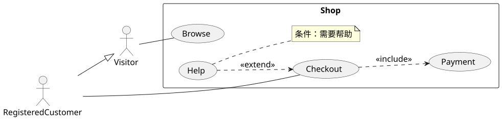
图 D：Visitor 浏览，RegisteredCustomer 可结账；Checkout 必含 Payment，Help 有条件扩展 Checkout。
| 符号 | 意义 | 方向／阅读 |
|---|---|---|
外部小人、«actor» 形式 |
参与者 Actor / Acteur | 人、外部软件或设备的角色 |
| 系统矩形 | 被建模系统 Subject / Sujet | 角色在外，用例在内 |
| 椭圆 | 用例 Use Case / Cas d'utilisation | 一组产生有价值结果的行为 |
| 角色与椭圆实线 | 参与关联 | 不表示执行顺序 |
«include» 虚线开放箭头 |
包含 | 基础目标→必用子行为 |
«extend» 虚线开放箭头 |
扩展 | 可选扩展→独立基础行为；说明条件／扩展点 |
| 空心三角实线 | 泛化 | 特殊角色／用例→一般角色／用例 |
注册完成通常是购买前置条件，不能自动画成每次购买的 include；extend 不是继承。用例的操作先后写文字场景、活动或时序图。完整绘制方法、购物案例、银行答案。
5. 对象图速查¶
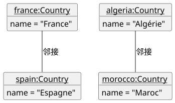
图 E：四个具体 Country 对象，两条已存在的邻接链接。
france:Country 是有名实例，:Country 是匿名实例；实例头必须下划线。name = "France" 是值槽而不是属性定义 name : String。实线是快照链接。对象图不能拿具体 France 画成继承 Country 的子类；局部快照必须说明省略，不允许省略后宣称有效多重性完整验证。对象图。
6. 时序图速查¶
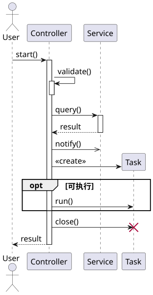
图 F：从上往下读发生顺序；同步、异步、返回、创建和销毁各有含义。
| 符号 / 术语 | 含义 | PlantUML／注意 |
|---|---|---|
| Lifeline / Ligne de vie，头下虚线 | 交互参与者的存在 | participant "pass:PASS" as P |
| Execution Specification / Activation，细矩形 | 正在执行行为 | activate P；不等于永久拥有 CPU |
| 实线实心箭头 | 同步调用 Message synchrone | A -> B : query() |
| 实线开放箭头 | 异步 Message asynchrone | A ->> B : notify() |
| 虚线开放箭头 | 返回 Reply / Retour | B --> A : result |
| 弯回自己箭头 | 自调用 | A -> A : validate() |
| 回调 Callback | 先前协作者反向调用／通知 | 不等于自调用，仍需声明同步性 |
| 指向新对象头的创建消息 | 创建实例 | create participant Task 后发送创建消息 |
| 生命线叉号 | 销毁发生点 | destroy Task；之后不得正常使用 |
sd 框 |
交互边界 | 不是系统类组合框 |
| gate | 边界消息连接点 | 接续内外交互，不是演员 |
{10..200 ms} |
时长约束 | 两个指定发生点之间，不是图总耗时 |
| 片段 | 快速含义 | 场景 |
|---|---|---|
alt [条件] / else |
互斥分支 | 授权成功／失败 |
opt [条件] |
执行或略过 | 请求收据才打印 |
loop [每项] |
重复 | Bag 对每个 Item 设置折扣 |
par |
分支允许并发交错 | 多个搜索服务 |
ref |
引用其他交互 | Balance Lookup |
break（补充） |
此片段替代剩余交互 | 失败结束 |
critical（补充） |
相关执行不能任意交错 | 原子状态更新，仍需代码同步 |
守卫 [condition] 与说明约束 {condition} 不能混作同一位置语法。水平排序只影响排版；没有标尺的竖直间隔不表示秒数。接收消息操作必须与类图一致。完整解释、PASS 完整图。
7. 通信、状态与活动速查¶
通信图 Communication / Collaboration¶
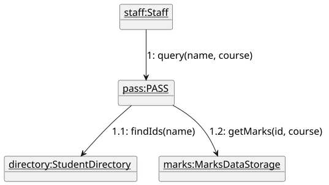
图 G：空间图中的消息 1、1.1、1.2 表示外层请求与嵌套协作。先找实例及链接，再按序号追踪箭头；编号不是时间数值。旧课件称“协作图”，现代为通信图。教材。
状态机 State Machine / États-transitions¶
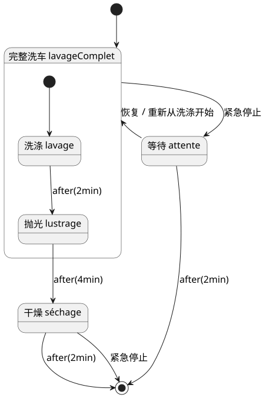
图 H：复合洗车状态、时间触发、紧急停止与恢复。恢复到默认入口不同于历史恢复。
| 符号 | 含义 |
|---|---|
| 实心圆 | 初始伪状态 |
| 圆角矩形 | 对象的一种持续状态 |
| 靶心圆 | 区域终态 |
trigger [guard] / effect |
事件触发、条件、转换效果 |
entry / action |
进入状态时动作 |
do / activity |
状态持续活动 |
exit / action |
退出状态时动作 |
after(2min) |
进入相应源状态后的时间事件 |
| 包含子状态的大框 | 复合状态 |
H、H*（补充） |
浅／深历史恢复 |
活动图 Activity / Activités¶
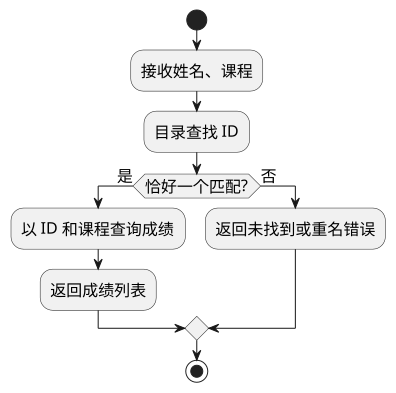
图 I：步骤之间传递控制，菱形选择分支；最后结束整个活动。
| 符号 | 含义 | 常见混淆 |
|---|---|---|
| 圆角动作框 | 一次工作／计算动作 | 不必是持久状态 |
| 箭头 | 控制流或对象流 | 明确流的种类及传递值 |
| 菱形，1 入多出 | 决策 decision / décision | 守卫决定走哪条路 |
| 菱形，多入 1 出 | 合并 merge / fusion | 汇合互斥分支，不等待所有分支 |
| 粗条，1 入多出 | fork / bifurcation | 产生并发控制流 |
| 粗条，多入 1 出 | join / synchronisation | 同步需要的并行分支 |
| 矩形对象节点 | 被传递数据 | 不等于参与者类 |
| 泳道 Partition / Couloir | 责任分区 | 不自动规定线程 |
| 靶心 Activity Final | 结束整个活动 | 与圈内叉 Flow Final（只结束一条流）不同 |
状态机问“对象在哪种状态、响应什么事件”；活动问“工作怎样流动”；时序问“谁向谁发什么消息”。并排解释。
8. 包、组件与部署速查¶
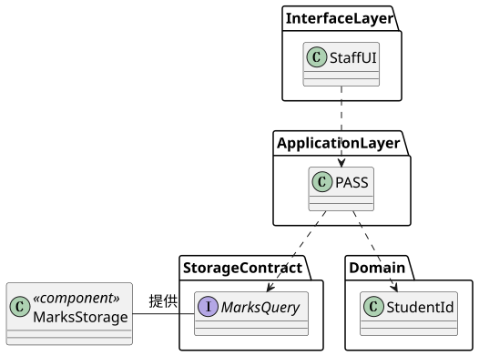
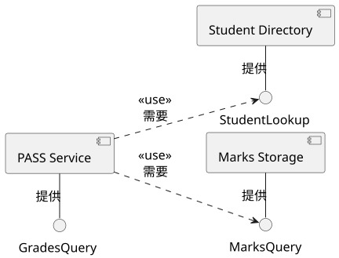
组件小图标与圆球分别表示实现单元和提供接口；虚线 «use» 指向需要使用的服务接口。所需接口也可画插口，球与插口接合才表示组装连接。
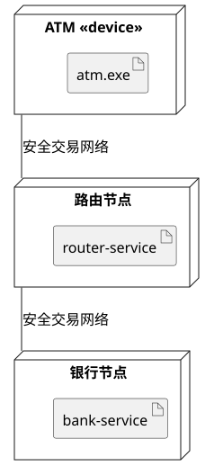
图 J：上图组织逻辑职责与服务接口；下图把软件制品放到机器节点。
| 图种／符号 | 语义 | 错误读法 |
|---|---|---|
| 包的文件夹标签 | 模型命名空间 | 必然是一个 C++ DLL |
| 包嵌套 | 命名与包含层次 | 对象组合所有权 |
«import» / «access» |
公开／私有导入（补充） | 复制源文件 |
«merge» |
包定义合并（补充） | C++ 类继承 |
组件小图标、«component» |
封装可替换单元 | 任意对象实例 |
| 接口小圆球 | 提供接口 | 某个成员对象 |
| 半圆插口 | 所需接口 | 一个继承三角 |
| 小方框端口 | 分类器边界交互点 | 属性槽 |
| 组装连接器 | 接合需要与提供能力 | 必然网络连接 |
| 委派连接器 | 外部端口连接内部部件 | 消息时间顺序 |
三维节点、«device» |
物理设备 | 业务类 |
«executionEnvironment» |
软件执行环境 | 只能是一台机器 |
折角制品、«artifact» |
代码／可执行文件等实际制品 | UML 注释便笺（标签与上下文区分） |
| 节点间实线 | 通信路径 | 继承／组合 |
逻辑层 layer 与部署层 tier 可以不一一对应。编译依赖制品图、运行组件图和机器部署图关注不同关系，勿混成一张含义不明的箭头网。完整阅读方法。
9. 四种补充图实例¶
复合结构 Composite Structure¶
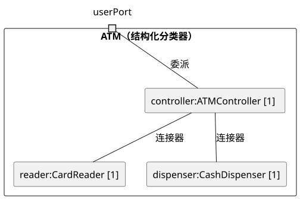
图 K：某个 ATM 分类器内部的角色、数量、端口和连接器。先看边界，再沿端口进入内部。类图表达类型关系，本图展开其内部结构。
轮廓 Profile¶
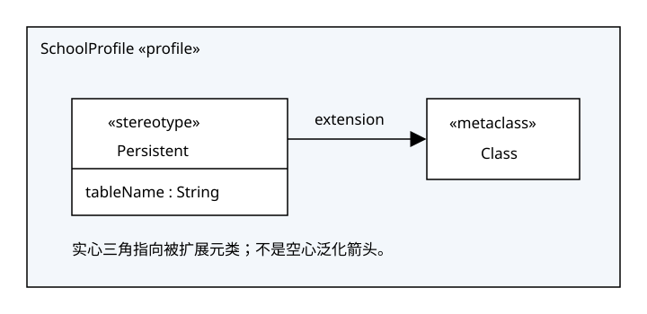
图 L：Persistent 构造型扩展 Class 元类，实心三角指向元类；它定义 tableName 附加性质。这不是类继承的空心三角。定义轮廓与给类应用构造型是两项不同工作。
交互概览 Interaction Overview¶
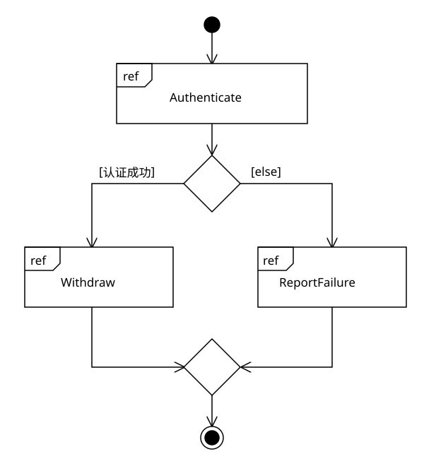
图 M：每个 ref 框引用完整交互，控制图决定认证后运行取款还是失败报告。消息细节仍在被引用时序图中。
时间 Timing¶
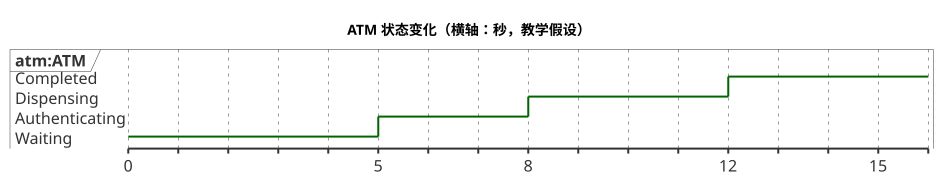
图 N：横轴有明确单位和数值，阶梯表示状态变化；高度不是余额值。可用于查询认证到出钞耗时。四种补充图教程。
10. C++、SOLID 与易混淆概念¶
| 易混项 | 判别方法 | 教材 |
|---|---|---|
| 类／对象 | 类型定义 vs 某时刻有身份状态的实例 | 基础 |
| 操作／方法 | 可请求契约 vs 实现函数体 | 类 |
| 公开接口／UML Interface | public 能力集合 vs 显式接口分类器 | 接口 |
| 属性／关联 | 值特征 vs 有身份对象之间链接 | 关系 |
| 读名三角／导航箭头 | 名称阅读方向 vs 能否访问对象 | 导航 |
| 聚合／组合 | 整体部分说明 vs 独占部件及销毁责任 | 所有权 |
| 多重性／容器长度 | 模型合法状态约束 vs 实际某时刻数据 | 关系 |
| 图形集合关系／LSP | 几何定义 vs 所有父类型客户端契约仍成立 | 5a |
| DI／DIP | 外部传入依赖 vs 高低层依赖合适抽象 | 原则 |
| shared_ptr／共享聚合 | 实现的共同拥有 vs 模型整体部分语义 | C++ |
| 下划线 | 类成员下划线＝静态；实例头下划线＝对象 | 类 |
| 类图开放箭头／时序开放箭头 | 实线关联导航 vs 实线异步消息 | 时序 |
| 原则 | 完整英文／法文 | 看图时检查 |
|---|---|---|
| SRP 单一职责 | Single Responsibility / Responsabilité unique | 一类是否混入不同变化原因？ |
| OCP 开闭 | Open–Closed / Ouvert-fermé | 新增预期规则是否总改稳定流程？ |
| LSP 里氏替换 | Liskov Substitution / Substitution de Liskov | 子类型是否拒绝原合法调用或削弱结果？ |
| ISP 接口隔离 | Interface Segregation / Ségrégation des interfaces | 客户端是否依赖无关能力？ |
| DIP 依赖倒置 | Dependency Inversion / Inversion des dépendances | 高层是否直接绑定文件、设备等细节？ |
查询答案：银行题 1；邻国、多边形、森林、媒体馆、维修、画廊、递归绘图、酒店题 2(a–h)；编辑器和购车题 3(a–b)；ATM 与 PASS 题 4.1–4.2；SOLID 题 5(a–g)，均在全部练习。课件网站三视图、Bag、图书馆、评论回调和授权例图在课件案例。
11. 中英法术语索引¶
| 中文 | English | Français |
|---|---|---|
| 模型／建模 | Model / Modeling | Modèle / Modélisation |
| 抽象 | Abstraction | Abstraction |
| 类／实例／对象 | Class / Instance / Object | Classe / Instance / Objet |
| 属性／操作／方法 | Attribute / Operation / Method | Attribut / Opération / Méthode |
| 状态／行为／身份 | State / Behavior / Identity | État / Comportement / Identité |
| 封装 | Encapsulation | Encapsulation |
| 关联／链接 | Association / Link | Association / Lien |
| 依赖 | Dependency | Dépendance |
| 导航性 | Navigability | Navigabilité |
| 多重性 | Multiplicity | Multiplicité / Cardinalité（课程） |
| 聚合／组合 | Aggregation / Composition | Agrégation / Composition |
| 泛化／专业化／继承 | Generalization / Specialization / Inheritance | Généralisation / Spécialisation / Héritage |
| 实现 | Realization | Réalisation |
| 接口 | Interface | Interface |
| 构造型 | Stereotype | Stéréotype |
| 模板／泛型 | Template / Genericity | Modèle paramétré / Généricité |
| 参与者／用例 | Actor / Use Case | Acteur / Cas d'utilisation |
| 场景 | Scenario | Scénario |
| 生命线 | Lifeline | Ligne de vie |
| 同步／异步 | Synchronous / Asynchronous | Synchrone / Asynchrone |
| 守卫／约束 | Guard / Constraint | Garde / Contrainte |
| 包／组件／制品／节点 | Package / Component / Artifact / Node | Paquetage / Composant / Artefact / Nœud |
| 耦合／内聚 | Coupling / Cohesion | Couplage / Cohésion |
| 需求／设计／实现 | Requirements / Design / Implementation | Besoins / Conception / Implémentation |
所有 PlantUML 图的同名 .puml 与渲染 SVG 存于 assert/；轮廓和交互概览采用可直接编辑的标准 SVG 源文件，以准确保留实心扩展箭头和 ref 框。原始 PDF 图像作为来源对照，不代替中文解答。